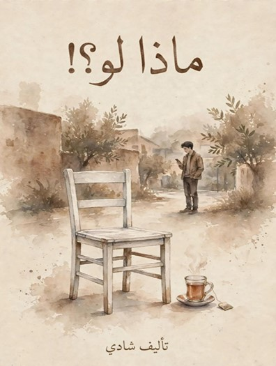

عدسة الروايات
LENS OF NOVELS
العودة للروايات

رواية اجتماعية
ماذا لو ما كانت الحرب؟
رواية تأملية عن النزوح والفقد والأمل. سؤال واحد يغير كل شيء: ماذا لو لم تكن الحرب؟
10 فصول
شادي رحال
قراءة ساعة
تحميل الرواية PDF
الفصول
10 فصول + مقدمة + خاتمة
المقدمة
عنوان الفصل
إغلاق